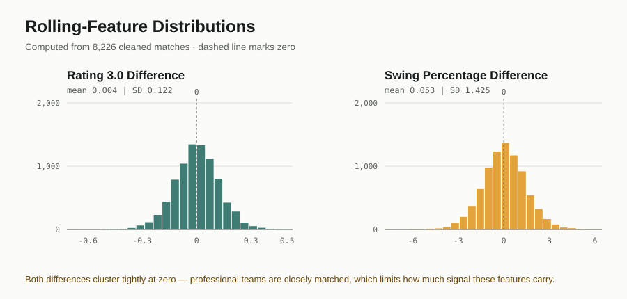
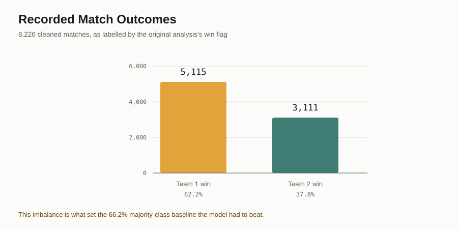
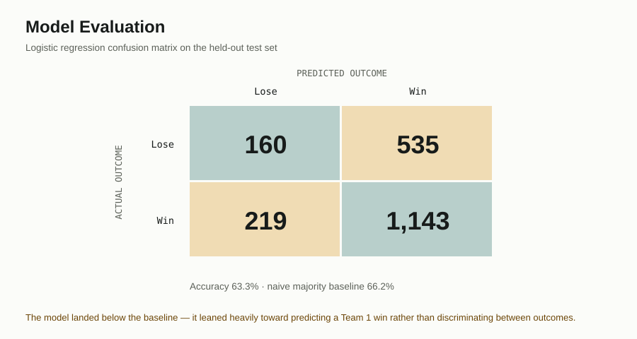

UMass Amherst INFO 248: Intro To Data Science — Co-Authored With Griffin DesRoches
November – December 2025
A statistical study of what actually predicts a professional Counter-Strike 2 match outcome — and an honest look at how little of it turned out to be individually significant.
Griffin and I both played competitive shooters and were curious whether team-level statistics — the kind broadcast overlays and HLTV stat pages show — actually carry predictive signal, or whether match outcomes are driven more by round-level execution that never shows up in a boxscore. Griffin led the HLTV scraping and data collection; I led the statistical modeling, the class-imbalance investigation, and the write-up.
The most useful part of this project wasn't the model — it was catching, before we trusted any result, that the dataset's "team1 wins ~62% of the time" split was a scraping artifact rather than a real skill signal. That single check changed how we had to evaluate everything downstream.
8,226 cleaned professional match observations from the supplied HLTV.org CSV (the original file contains 75 columns; data collection was led by Griffin DesRoches and released publicly under CC0). Every engineered feature is a rolling 5-game team differential — team1's recent form minus team2's recent form — computed before the match being predicted.
| Variable | Description |
|---|---|
| diff_roll5_adr | Avg. damage per round, team1 minus team2, past 5 games |
| diff_roll5_assists | Avg. assists, team1 minus team2, past 5 games |
| diff_roll5_clutches_won | Avg. clutches won, team1 minus team2, past 5 games |
| diff_roll5_deaths | Avg. deaths, team1 minus team2, past 5 games |
| diff_roll5_kast_pct | Avg. KAST%, team1 minus team2, past 5 games |
| diff_roll5_kills | Avg. kills, team1 minus team2, past 5 games |
| diff_roll5_multi_kill_rounds | Avg. multikill rounds, team1 minus team2, past 5 games |
| diff_roll5_opening_deaths | Avg. opening deaths, team1 minus team2, past 5 games |
| diff_roll5_opening_kills | Avg. opening kills, team1 minus team2, past 5 games |
| diff_roll5_rating_3 | Avg. rating of each team's highest-rated player, past 5 games |
| diff_roll5_swing_pct | Avg. swing% (share of round-deciding plays), past 5 games |
Rows with missing values or without 5 prior games of history for either team were dropped — 3,034 rows, taking the modeling set from 11,260 down to 8,226 matches.
Raw data preview
These are the first eight rows exactly as recorded in the supplied CSV. You can download the full 8,226-row file.
| Date | Event | Team 1 | Team 2 | Score | Winner |
|---|---|---|---|---|---|
| 2025-10-16T05:45:00Z | CS Asia Championships 2025 | fut | faze | 2–1 | team1 |
| 2025-10-16T02:00:00Z | CS Asia Championships 2025 | fnatic | heroic | 1–2 | team2 |
| 2025-10-16T02:30:00Z | CS Asia Championships 2025 | liquid | legacy | 2–1 | team1 |
| 2025-10-15T23:00:00Z | CS Asia Championships 2025 | faze | tyloo | 2–1 | team1 |
| 2025-10-15T23:05:00Z | CS Asia Championships 2025 | pain | fut | 0–2 | team2 |
| 2025-10-15T06:50:00Z | CS Asia Championships 2025 | lynn-vision | 3dmax | 0–2 | team2 |
| 2025-10-15T05:00:00Z | CS Asia Championships 2025 | virtuspro | mibr | 2–0 | team1 |
| 2025-10-15T03:40:00Z | CS Asia Championships 2025 | fnatic | tyloo | 2–0 | team1 |
A data-quality catch worth flagging
The outcome variable turned out to be skewed: team1 won about 62% of matches in the dataset versus 38% for team2. HLTV doesn't assign "team1" by ranking or alphabetically, so this wasn't a real skill signal — it was an artifact of how matches happened to be logged during scraping. It mattered a lot for evaluation (see below), and catching it before modeling rather than after was one of the more useful steps in this project.
These visuals show the progression from feature exploration to model evaluation. They provide context for both the data-quality issue and the final result.



A chronological 75/25 split — trained on the older 75% of matches, tested on the most recent 25% — since the rolling features make rows non-independent and a random split would leak future form into training.
| Coefficient | Estimate | Std. error | z value | Pr(>|z|) |
|---|---|---|---|---|
| (Intercept) | 0.436 | 0.026 | 16.49 | <2e-16 *** |
| diff_roll5_adr | -0.019 | 0.021 | -0.94 | 0.347 |
| diff_roll5_assists | 0.006 | 0.005 | 1.23 | 0.219 |
| diff_roll5_clutches_won | -0.005 | 0.027 | -0.17 | 0.867 |
| diff_roll5_deaths | -0.024 | 0.005 | -4.94 | 7.9e-07 *** |
| diff_roll5_kast_pct | 0.014 | 0.015 | 0.94 | 0.347 |
| diff_roll5_kills | 0.006 | 0.008 | 0.74 | 0.458 |
| diff_roll5_multi_kill_rounds | -0.009 | 0.014 | -0.68 | 0.496 |
| diff_roll5_opening_deaths | 0.075 | 0.032 | 2.34 | 0.019 * |
| diff_roll5_opening_kills | 0.063 | 0.032 | 2.00 | 0.046 * |
| diff_roll5_rating_3 | 0.061 | 1.558 | 0.04 | 0.969 |
| diff_roll5_swing_pct | 0.012 | 0.089 | 0.14 | 0.892 |
Only 3 of the 11 engineered features reached significance: deaths (more deaths than your opponent over the past 5 games hurts win probability, unsurprisingly), and — more interesting — opening kills and opening deaths, both positively associated with winning. Read alongside the swing% definition, this suggests CS2 rewards teams whose players actively engage in opening duels, win or lose, over teams that play passively. Winning or losing the opening duel matters less than being willing to take it.
| Predicted Lose | Predicted Win | |
|---|---|---|
| Actual Lose | 160 | 535 |
| Actual Win | 219 | 1,143 |
The model did not beat the naive baseline
Test accuracy came out to 63.3% — but the No Information Rate (the accuracy from just always guessing "team1 wins," the majority class) was 66.2%. The formal test for whether accuracy beats that baseline (P-Value [Acc > NIR]) returned 0.997 — nowhere close to significant, and numerically the model landed slightly below the dumb baseline. Balanced accuracy was 0.535 and Cohen's Kappa was 0.078, both barely above chance.
This lines up with the coefficient table above: 8 of 11 features weren't individually significant, so it's not surprising the combined model struggled to add much over the base rate. The honest read is that team-level rolling averages capture only a thin slice of what decides a CS2 match — round-level tactical execution, individual form on the day, and momentum within a match aren't visible to stats aggregated 5 games back. High sensitivity (0.839) paired with low specificity (0.230) shows the model mostly learned to lean on the majority class rather than genuinely discriminate between outcomes.
This was Model 1 of three planned comparisons — Random Forest and boosted-tree classifiers followed the same evaluation approach, benchmarked against the same NIR baseline, and (per the fuller write-up) performed better. Those pages weren't available when this site was built; happy to add them if useful.
It would have been easy to lead with the Random Forest or boosted-tree numbers and bury this page. I'm putting the logistic regression result front and center instead, because the negative result is the more informative one: it rules out a whole class of simple, team-averaged features as the explanation for match outcomes, and it's the kind of finding a stats-literate reviewer (a hiring manager or professor) can actually check against the confusion matrix and NIR test above. A model that "performed better" without that context is a lot less convincing than one whose failure mode is fully shown.
Both are available to download: the original R Markdown holds the source analysis, and the reference R pipeline is a compact standalone version of it.